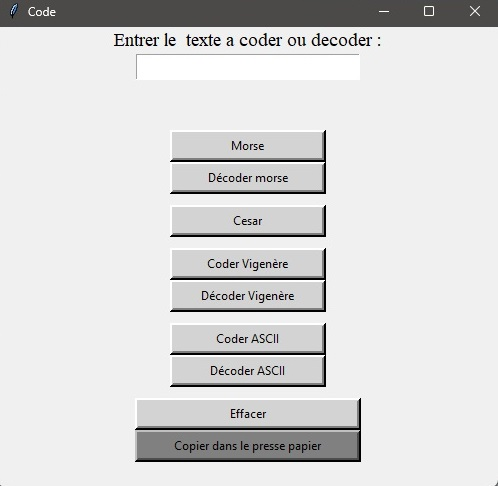
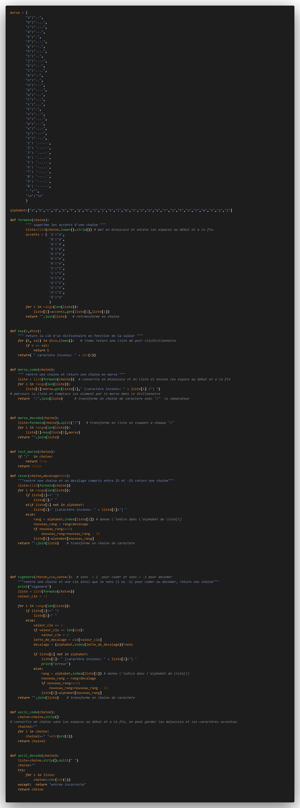
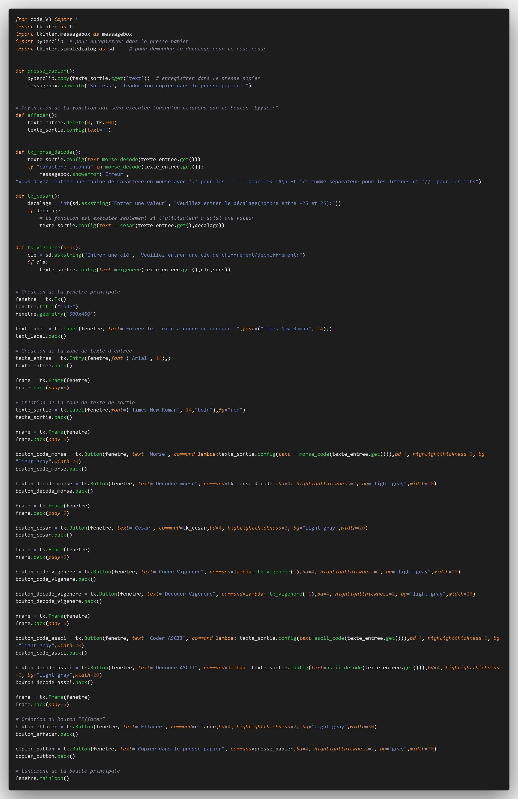
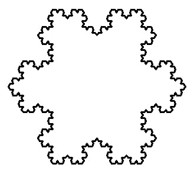

Voici mon premier projet fait en NSI.
Le mot à deviner est pris aléatoirement dans une liste du dictionnaire. L'utilisateur doit alors proposer une lettre et le programme affiche les lettres correctes du mot à deviner, ainsi que le pendu et les lettres déjà citées.
Le programme supporte toutes les erreurs de l'utilisateur. Si celui-ci met un caractère qui n'est pas dans l'alphabet ou qui a déjà été cité, le programme indique l'erreur et redemande une lettre.
Voici le code :

Voici le rendu en Console :

Attention il faut modifier le lien vers le fichier contenant la liste de mots et installer Unidecode
Télécharger version python
L'utilisateur donne le texte à chiffrer au programme, qui le crypte alors en code morse.
 Télécharger
Télécharger
L'utilisateur donne le texte à chiffrer au programme, qui le code selon l'option choisie.

Voici le code :
Voici le code développée pour les conversion de chaine de caractère, avec différente fonction pour chiffrer/déchiffre les chaines de caractère.


Le tout est regroupé dans un fichier zip, il faut installer la bibliothèque Pyperclip pour le presse papier.
Je conseille de lancer le fichier ' interface graphique '.


.jpg)
.jpg)
.jpg)


Ouvrir le fichier python puis exécuter une fonction.
Télécharger